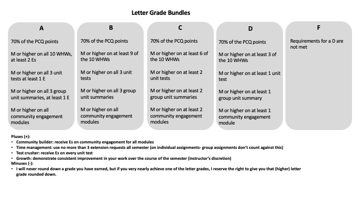

Syllabus
Classroom expectations
- I will stay home if I am feeling sick and make arrangements to deliver the course material
- I will work with you to arrange accommodations when you need them
- I will respect your time by starting and ending class on time
- I will answer your questions thoughtfully, and if I don’t know the answer, I will follow up in a timely manner
- I will embrace who you are as whole people
- I will model respect, openness, and engagement, and foster a supportive and inclusive environment
- I will be honest when I make mistakes, because failure is part of growing
- That you will stay home if you are sick and contact me via email to arrange accommodations
- That you genuinely attempt to engage with the course
- That you ask questions if you are confused (you may do this privately – there is no obligation to ask during class hours)
- That you communicate with me when you have problems that interfere with your ability to engage with the coursework
- That you treat your peers with respect and openness, and that you participate in creating an inclusive, supportive, and engaged classroom
- Perfection. Ever. It’s a myth.
- That you will ‘sit still’ or ask for permission to leave the classroom to go to the bathroom or if you just need a minute. You’re adults and I trust you to do what you need to.
- That everyone will learn in the same way. You do not have to match some “model student” to do well in this class
Team-Based Learning
I am using a variation of team-based learning for this class, in order to cultivate a community-minded classroom, encourage a growth mindset, and build group work skills. Here is how this will work:
We will have three modules, and you will work in a team of 4-6 students for each module. Your team will work on problems in class, discuss the content, and do regular short presentations to the class. At the end of each module, your team will assemble a unit summary to turn in, and you will provide feedback on your teammates and on your own work. These are the two graded portions related to team-based work. After each module, we will shuffle the groups, so you will have three different teams over the course of the semester.
In order to be a good member of your team, there will be a reading quiz (the PCQ) that must be completed prior to class. You must complete at least 70% of these PCQs to pass the class.
Not all of the work will be in groups. You will also have individual tests and homework. You can work with other students on your homework, but the final work you submit must be your own.
I have tried to balance the class so that there is a mix of individual and group work, which I hope will allow everyone to get something meaningful out of the course.
Assignments and Grading
Assignments fall into “bundles,” which contribute to your grade in specific ways. Your performance on each bundle determines your rough letter grade (full letters). There is one “wild card” which is an optional project that you can use to replace another graded assignment in the class.
Beyond that, you can achieve grade boosts, which round your grade up, e.g. from a B to a B+, or a B+ to an A-.
Grading Scheme
Table of letter grades
| Letter grade | Pre-Class Questions (PCQs) | Weekly Homeworks (WHWs) | Unit tests (x3) | Group unit summaries (x3) | Community engagement (x3) |
|---|---|---|---|---|---|
| D | Earn 70% of points | Earn at least 3 Ms or higher | At least M on 1 | At least M on 1 | At least M on 1 module |
| C | Earn 70% of points | Earn at least 6 Ms or higher | At least M on 2 | At least M on 2 | At least M on 2 modules |
| B | Earn 70% of points | Earn at least 9 Ms or higher | All Ms or higher | All Ms or higher | All Ms or higher |
| A | Earn 70% of points | All Ms or higher, at least 2 Es | All Ms or higher, at least 1 E | All Ms or higher, at least 1 E | All Ms or higher |
Bundle visualization

Grading scales
PCQs will be graded on a points scale: each PCQ is worth 8 points. You must get at least 70% of the points on the PCQs to pass the class.
Everything except PCQs will be graded on the following scale:
- E: exceeds expectations – this is a thorough and correct answer that demonstrates excellent understanding of the concepts and makes proper use of the mathematical skills expected in this class.
- M: meets expectations – this is an answer that demonstrates solid understanding of the concepts but perhaps includes some small mathematical errors or minor conceptual mistakes.
- R: revise or retake – this is an answer that applies the concepts incorrectly, misunderstands the point of the question, does not complete the question, fails to follow directions, and/or contains significant mathematical errors
- N: not assessable – if you turn nothing in, you will receive an N. You will also receive an N if your work is illegible, too minimal to assess, or irrelevant.
E and M are considered passing grades. To get an A in this class, you must achieve some Es (see the grading scheme)
R and N are considered failing grades. Only Rs can be revised or retaken.
Grading bundles
In order to get the most out of class, you need to prepare. To do this, most days we will have a pre-class quiz due in Lyceum, which you must complete prior to class start. These are graded on points, and you only need to achieve an average of 70%.
Given the purpose of the PCQs, I will not offer extensions, except in case of a major medical or family emergency that causes you to miss class.
Regular problem-solving is very important to developing confidence and skill in this content, so every week you will have a weekly problem set. You will turn in the weekly problem set by scanning and uploading as a PDF to Lyceum These are due by 8PM each Wednesday.
These are graded on an EMRN scale, and you can revise any homework that receives an R grade once. You may not revise the same homework twice, and E, M, and N grades cannot be revised.
You may work with classmates on the homework, but please be sure to give credit.
You may request extensions on the WHWs using the extension form.
This assignment is meant to help you organize what you’ve learned, reinforce problem-solving strategies, and create a resource you can use for studying later.
At the end of each module, your team will create a Unit Summary that captures the key ideas from the unit. The goal is to build a concise but useful reference that highlights what you’ve learned and how to apply it.
Your Unit Summary should include:
Key concepts, definitions, and constants
Relevant equations for each concept
Problem-solving tools and strategies
One example problem from the homework for each key concept from the unit (you may illustrate up to two concepts in the same problem)
- Show the worked-out solution clearly enough that a future student could follow your reasoning.
End-of-unit summary: a short (1–2 paragraph) summary highlighting the most important ideas of the unit, why they matter, and how to approach problems that involve those concepts.
Each unit summary is graded on an E/M/R/N scale, and an E and M are both considered passing grades. Your team may revise a unit summary that receives an R grade one time.
Your team may request an extension on the unit summary using the extension form. Only one member of the team needs to submit the extension request.
There will be three unit tests during class throughout this semester. The tests are cumulative, but they will largely focus on the more recent material. These tests will occur in class, and you may bring a single-sided 8.5”x11” sheet of paper with equations and notes - hand-written (please speak to me if you need to type the sheet and we will come up with a plan). This paper will be turned in with your test.
These are graded on an E/M/R/N scale, and you may retake each unit test during the scheduled make-up test days. In order to retake a unit test, you must first correct your first unit test and complete a short reflection in a Google form.
At the end of each module, you and your peers will fill out a form where you provide feedback on your teammates’ contributions and your own. Your self-assessment and your peers’ assessments will be weighted equally in the grade, and I will also take into account your participation in pre-class quizzes and your in-class attendance in order to determine a final grade for each module.
These are graded on an E/M/N scale. Not submitting your own form will result in an “N” regardless of how your team rates your participation. Note that you cannot revise or retake community engagement.
I recognize that group work and peer grading can be fraught. I have been in many difficult group projects myself, and as a queer woman in physics, I’m not unaware of cultural and social biases that exist in our field. If there are any concerning dynamics in your group, I hope that you feel safe talking to me in addition to including that information in your feedback form. You may also fill out my anonymous feedback form and give me only the information you think I need to address this issue anonymously.
The student becomes the teacher… you will have an opportunity to write a physics problem similar to your homework problems. You must:
- select at least one concept each from three different concept groups
- select one mathematical tool to highlight
- write a physics problem that tests understanding of those concepts and uses the math tool
- write up a detailed solution to that problem using the four-step problem solving method
- explain how your problem tests understanding for the concepts you selected
This are graded on an E/M/R/N scale, and you may use your problem project score to replace one of the following:
- your PCQ score for the semester (an M or higher gives you full credit on the PCQs)
- two (2) WHW scores
- one (1) unit test score
- one (1) unit summary score
- one (1) community engagement grade
I will always replace the grade item that most benefits you, and will never replace a better score with a worse one. The problem project can only help you.
You may request an extension on the problem project using the extension form. Please note, however, that the problem project cannot be extended beyond the end of final exam period.
Please note that the problem project cannot be revised, given the time constraints. I am always happy to talk through drafts in office hours before you turn it in.
Grading boosts
If you receive all Es on your community engagement, I will round your grade up.
If you use no more than 3 extension requests all semester (on individual assignments), I will round your grade up.
If you get Es on every unit test, I will round your grade up.
If you demonstrate consistent improvement in your work across the semester, I reserve the right to round your grade up.
Deadlines and Extensions
If you need an extension, you may request one using this form. I recognize that things come up and you may require flexibility at some point in the semester. Please feel free to reach out to me directly if you are struggling to meet a deadline. I want to support you and make sure you have the best possible chance for success in this class, and the only way I can help is if you communicate with me.
You can request as many 48 hour extensions as you need and it will not affect your grade (short of making you ineligible for the time management round-up). You may not string together multiple extensions on the same assignment, so try to determine before you request 48 hours whether you think you will need more time.
In general, I am happy to be flexible. Please note, however, that some assignments will have stricter deadlines. These assignments include the PCQs and the final portfolio and final problem project, and the nature of the deadlines is discussed in their descriptions above.